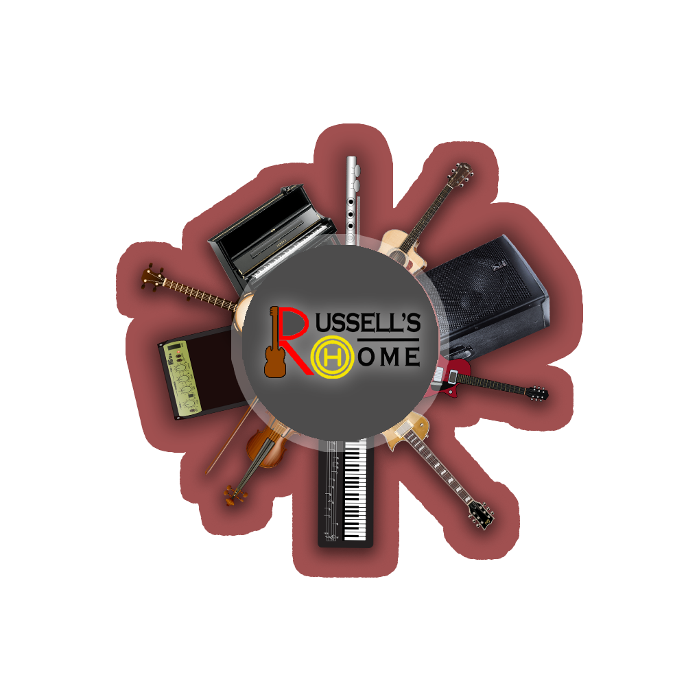

WHAT WE DO
Studio-K Music Studios is designed to give
you the very best in flexibility and
comfort for your projects.
RECORDINGStudio-K Music Studios is built from the ground up for recording. The acoustics in our live room are phenomenal for drums, grand piano, and string ensembles. We also have a great collection of some of the finest microphones in the world and there are keyboards, guitars, and Neumann Microphones in all studios |
MIXING / MASTERINGWe offer mixing and mastering at Palma Music Studios. Anything from a classic analog mix on the SSL-Duality through the ATC monitors in the qiuncy room to the favorite choice studio among our urban/electronic music clients, the mercury room, with Augspurger monitors, for that magical low end! |
ADR POST-PRODUCTIONFor ADR dubbing, voice-over, and post. We can remote record via Source Connect and we are SAG/AFTRA approved. The studio features a Genelec surround system, Universal Audio Apollo x8p interface and we run all the necessary software needed for your convenience. Our engineers have recorded and mixed everything from major feature films, and orchestral albums to TV shows and surround live concerts in this studio. |
VOICE RECORDINGWant to record vocals? Aretha room is our main studio for that, and it’s also perfect for voice-over and audio books. Our engineers speak English, Spanish, German, Swedish, Dutch and Danish. |
PUBLISHINGOur writers have written a lot of of music over the years. |
PARTNERSAt Palma Music Studios we have the privilege of being able to work with some of the world’s leading music industry names and brands. Their products allow us to continue to deliver excellent services to our clients. |
CLIENTS
|
|
|
|  | |
|
|
|
|
|
|
|